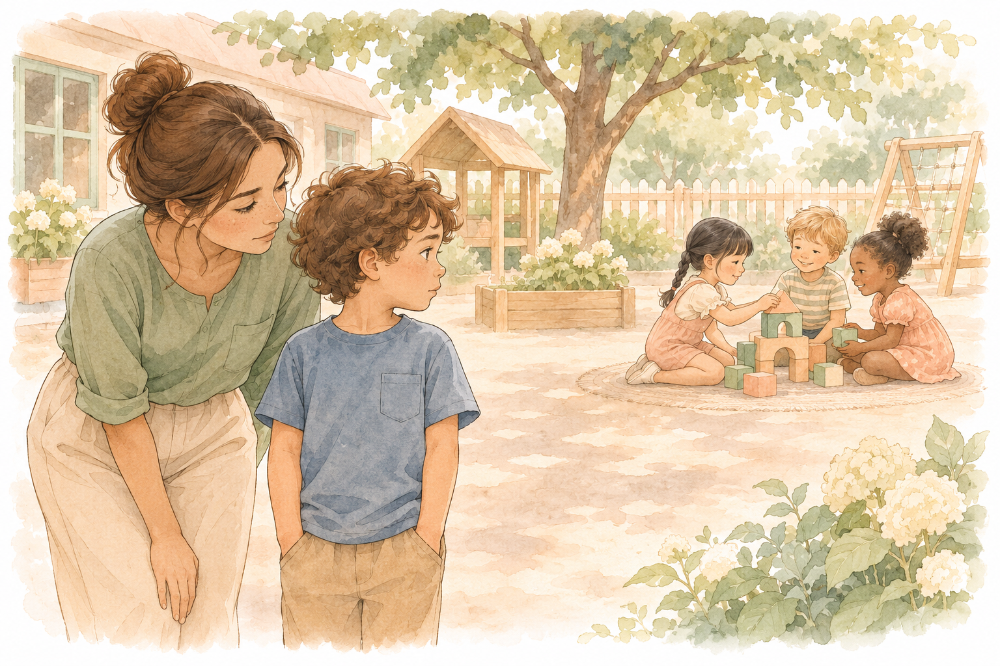
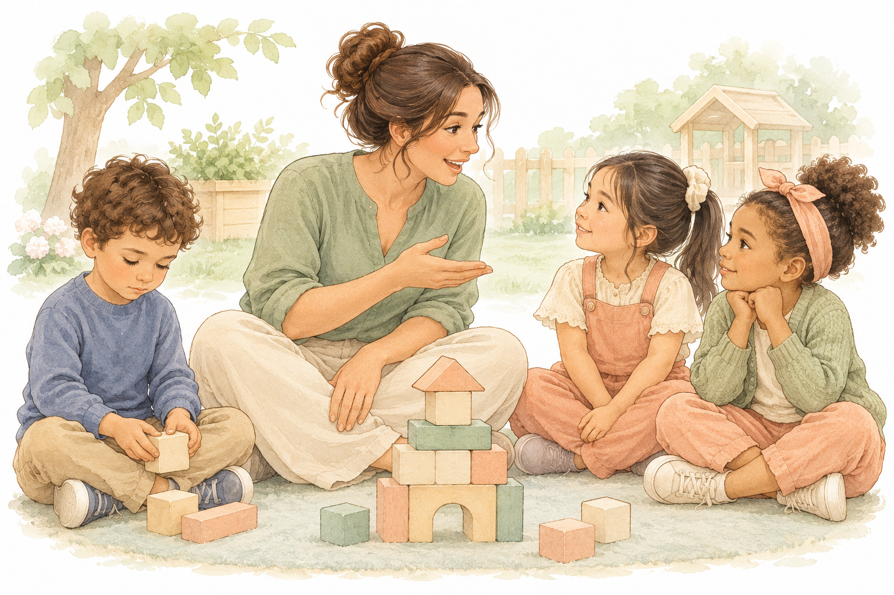
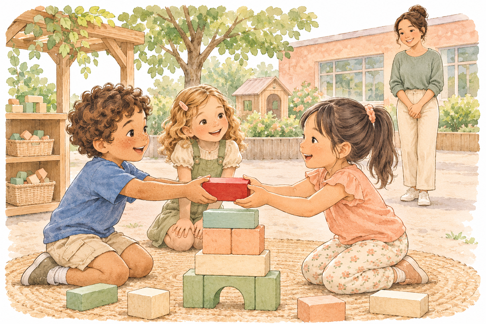
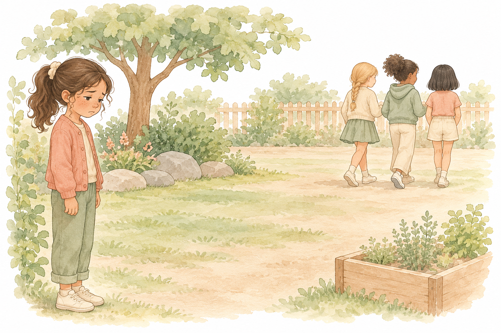

1 / 20 · 3 דקות · פתיחה
לשחרר את השליטה
לשלב את הילד, ולתת לו לעשות לבד
במפגשים הקודמים למדנו לתכנן, ללמד ולחזק.
היום נלמד את הצעד הבא: לשחרר.

מה את רואה בתמונה?
2 / 20 · 8 דקות · פתיחה · כתיבה אישית
מה הילד שלך עושה לבד?
חשבי על ילד אחד שאת מלווה.
חשבי על דבר אחד שהוא כבר יודע לעשות.
ובכל זאת, את עושה אותו בשבילו.
מה הילד שלך יכול לעשות לבד, ואת עדיין עושה בשבילו?
סגירת הדיון
כמעט לכל אחת יש דבר כזה. זה לא כישלון. זה הרגל שנוצר מתוך רצון לעזור.
3 / 20 · 6 דקות · פתיחה · מה השתנה
אחרי CBT: הרבה שליטה אצלנו
ב־CBT אנחנו לוקחות הרבה אחריות.
זה נכון ונחוץ בהתחלה.
אבל המטרה היא שבסוף הילד יעשה לבד.
- 1אני מתכננת
- 2אני מלמדת
- 3אני מחזקת
- 4הילד עושה לבד
לדעתך, למה קשה לנו לשחרר?
סגירת הדיון
קשה לשחרר כי אכפת לנו, כי אנחנו מפחדות שייכשל, וכי לעשות בשבילו מהיר יותר. אבל אם לא נשחרר, הוא לא ילמד.
4 / 20 · 4 דקות · פתיחה · המטרה
המטרה של היום
אנחנו רוצות שהילד יהיה חלק מהכיתה, עם הילדים.
כדי שזה יקרה, מישהו צריך לזוז אחורה.
ומי שזזה אחורה היא הסייעת.
הילד
משתלב עם הילדים ועושה יותר לבד
הסייעת
משחררת לאט, צעד אחרי צעד
מה ישתנה אצל הילד אם תעשי פחות בשבילו?
5 / 20 · 8 דקות · קטע א · כשאני עושה בשבילו
כשאני עושה בשבילו
נועם בן 5, בגן.
בהפסקה שתי בנות בונות מגדל קוביות.
הסייעת לוקחת אותו אליהן ויושבת באמצע.
היא מדברת בשמו: ״נועם רוצה קובייה אדומה.״
הבנות עונות לה. נועם שקט. היא מסיימת את המגדל בשבילו.

מה עשתה הסייעת במקום נועם?
סגירת הדיון
הסייעת רצתה לעזור. אבל היא דיברה, בנתה וסיימה במקומו. נועם היה שם, אבל לא עשה כלום לבד.
6 / 20 · 7 דקות · קטע א · כשאני זזה אחורה
אותו רגע, אחרת
אותו נועם, ביום אחר.
הסייעת עומדת שני צעדים מאחור.
היא אומרת לו רק: ״אפשר לבקש קובייה.״
נועם מבקש בשקט. אחת הבנות נותנת לו קובייה.
הסייעת עדיין רואה אותו, אבל לא באמצע.

מה השתנה אצל נועם כשהסייעת זזה אחורה?
סגירת הדיון
כשהסייעת שחררה, נועם ביקש בעצמו. היא לא נעלמה. היא נשארה במקום שממנו היא רואה אותו.
7 / 20 · 8 דקות · קטע ב · הסיפור של יובל · שלב 1
הסיפור של יובל: הבעיה
יובל בן 14. הוא לומד בכיתת חינוך מיוחד.
אמא שלו עושה בשבילו כמעט הכל.
היא בוחרת לו בגדים, מצחצחת לו שיניים וקושרת לו שרוכים.
הוא לא יוצא לשום מקום בלעדיה.
מה לדעתך הייתה הבעיה של יובל?
סגירת הדיון
הבעיה היא לא רק אצל יובל. מישהו עושה בשבילו הכל, ולכן הוא לא לומד לעשות לבד.
8 / 20 · 6 דקות · קטע ב · הסיפור של יובל · שלב 2
שלב 2: תצפית ומידע
היועצת לא התחילה מיד.
קודם היא אספה מידע.
היא דיברה עם המורים, עם ההורים, עם הפסיכולוג ועם המדריך בצופים.
היא שמעה גם את יובל. הוא חלם לקנות לבד בסופר.
עם מי את מדברת לפני שאת מתחילה לעבוד עם ילד?
סגירת הדיון
לפני שמשנים משהו, מסתכלים ושואלים. גם את הילד עצמו.
9 / 20 · 7 דקות · קטע ב · הסיפור של יובל · שלב 3
שלב 3: מטרות ברורות
״שיהיה עצמאי״ היא מטרה לא ברורה.
היועצת קבעה עם יובל שתי מטרות ברורות.
את המטרה השנייה יובל בחר בעצמו.
מטרה 1
ללכת ברחוב בלי מבוגר
מטרה 2
לקנות לבד בסופר
מה מטרה ברורה אחת לילד שאת מלווה?
סגירת הדיון
מטרה ברורה היא משהו שאפשר לראות: הילד עושה פעולה אחת לבד.
10 / 20 · 8 דקות · קטע ב · הסיפור של יובל · שלב 4
שלב 4: צעדים קטנים באוטובוס
היועצת לא אמרה ליובל ״סע לבד״.
היא התחילה קרוב מאוד, וכל פעם זזה קצת.
- 1יובל יושב לידה
- 2מושב אחד מאחוריה
- 3הוא מקדימה, היא מאחור
- 4היא מחכה לו בתחנה
- 5הוא נוסע לבד
מה הצעד הקטן הראשון שאת יכולה לתת לילד שלך?
סגירת הדיון
משחררים לאט. כל צעד קטן מספיק כדי שהילד יצליח, ואז מתקדמים לצעד הבא.
11 / 20 · 7 דקות · קטע ב · הסיפור של יובל · שלב 5
שלב 5: חיזוק על כל הצלחה קטנה
בהתחלה יובל ישב לבד רק כמה שניות, ומיד רץ אליה.
היועצת לא אמרה ״לא הצלחת״.
היא שיבחה אותו על השניות שישב לבד.
היא אמרה בדיוק מה הוא הצליח לעשות.
מה תגידי לילד שלך כשהוא מצליח משהו קטן לבד?
סגירת הדיון
מחזקים כל הצלחה קטנה, ואומרים בדיוק מה הילד עשה. כך כישלון קטן הופך להצלחה.
12 / 20 · 8 דקות · קטע ב · הסיפור של יובל · השחרור
הסוף: יובל ״ברח״ לה
יום אחד היועצת הייתה אמורה ללוות את יובל לאוטובוס.
הוא ״ברח״ לה, עלה לבד והגיע לבד.
אחר כך הוא סיפר לה בשמחה איך הוא ״סידר״ אותה.
מאז הוא נוסע לבד.
מה למדת מהסיפור על לשחרר את השליטה?
סגירת הדיון
הסוף הטוב ביותר הוא כשהילד כבר לא צריך אותנו. זו ההצלחה שלנו.
13 / 20 · 5 דקות · קטע ב · סיכום לפני הפסקה
חמשת השלבים
זו דרך העבודה של היועצת.
אחרי ההפסקה נבנה תכנית כזו לילד שלך.
- 1הבעיה
- 2תצפית ומידע
- 3מטרות
- 4צעדים קטנים
- 5חיזוק ושחרור
על איזה ילד תרצי לבנות תכנית אחרי ההפסקה?
14 / 20 · 8 דקות · קטע ג · הילד עוזר לי
״בוא תראה לי איך שוחים״
סייעת אמרה לילד: ״אני מפחדת במים. בוא תראה לי איך שוחים.״
פתאום הילד הוא זה שמלמד.
הוא הרגיש שהוא יכול לתת.
במה הילד שלך יכול לעזור לך?
סגירת הדיון
כשמבקשים מהילד עזרה, השליטה עוברת אליו. הוא מרגיש מסוגל, ואנחנו זזות אחורה בלי לעזוב.
15 / 20 · 20 דקות · קטע ג · התכנית שלי
התכנית שלי לילד אחד
בחרי ילד אחד שאת מלווה. כתבי בלי שם מלא.
מלאי את התרשים בדף העבודה, עמוד 2.
- 1הבעיה
- 2מה ראיתי
- 3המטרה
- 4הצעד הראשון
- 5החיזוק
- 6מה אני משחררת
דוגמה
הבעיה: גיא מחכה שאכתוב לו.
המטרה: גיא יכתוב לבד את המילה הראשונה.
הצעד הראשון: אני כותבת את האות הראשונה, והוא ממשיך.
מה אני משחררת: אני זזה צעד אחורה אחרי שהוא מתחיל.
מה הצעד הראשון בתכנית שלך?
סגירת הדיון
תכנית טובה היא קטנה וברורה. צעד אחד, חיזוק אחד, ודבר אחד שאני מפסיקה לעשות.
16 / 20 · 7 דקות · קטע ג · גבול
מתי לא משחררים
כשיש סכנה, לא זזים אחורה.
כשילד נפגע או במצוקה, נשארים איתו.
כשפוגעים בילד, מגינים ומספרים למורה.
משחררים רק כשבטוח, ולאט.

מתי לדעתך נכון לך להתערב?
סגירת הדיון
לשחרר זה לא לעזוב. בסכנה, במצוקה ובפגיעה, הסייעת קרובה ומספרת למורה.
17 / 20 · 13 דקות · קטע ג · אני והשליטה
אני והשליטה
עכשיו מסתכלות על עצמנו.
כתבי בכנות. אין כאן תשובה נכונה ואין ציון.
מה קשה לך לשחרר?
סגירת הדיון
כולנו מחזיקות משהו חזק מדי. לזהות אותו זה הצעד הראשון לשחרר.
18 / 20 · 8 דקות · קטע ד · תיאום
משפט אחד למורה
לפני שמשחררים, מספרות למורה.
המבנה: ״ראיתי ש… אני מציעה לנסות… נבדוק עד…״
מה תגידי למורה על התכנית שלך?
סגירת הדיון
המורה צריכה לשמוע מה ראית, מה את מציעה, ומתי בודקים.
19 / 20 · 14 דקות · קטע ד · יישום
מה אשחרר השבוע?
דבר אחד קטן.
ילד אחד.
שבוע אחד.
מה תשחררי השבוע?
סגירת הדיון
שינוי קטן שחוזר כל יום עדיף על תכנית גדולה שלא קורית.
20 / 20 · 10 דקות · סיום
לשלב את הילד, ולתת לו לעשות לבד
בהתחלה אנחנו קרובות ומחזיקות הרבה.
לאט לאט אנחנו זזות אחורה.
כמו יובל באוטובוס: כל פעם מושב אחד.
מה תיקחי איתך מהשיעור היום?
סגירת הדיון
המטרה שלנו היא שיום אחד הילד ״יברח״ לנו.